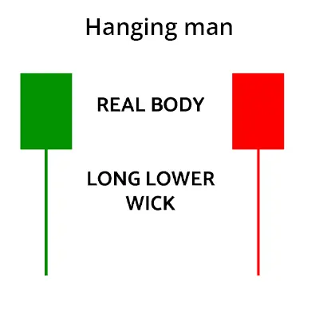
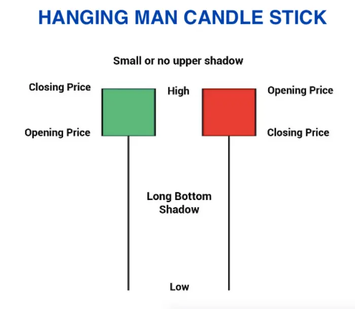
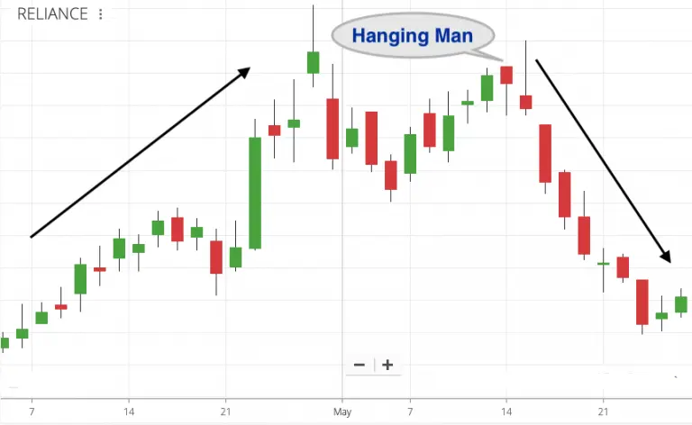
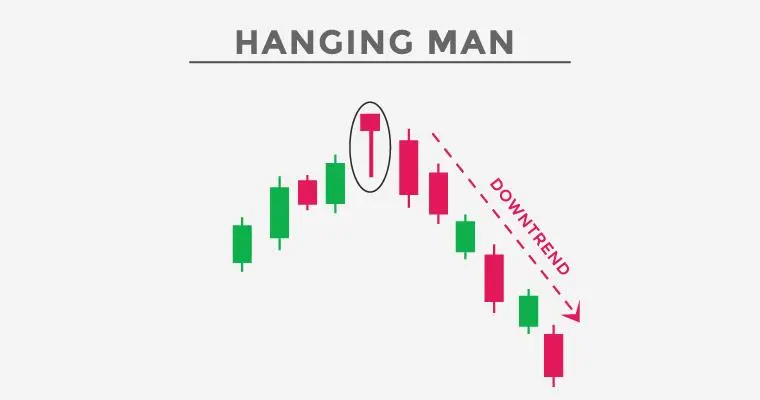

हैंगिंग मैन एक बियरिश रिवर्सल कैंडलस्टिक पैटर्न है जिसमें लंबी निचली छाया और छोटी सच्ची बॉडी होती है।
यह कैंडलस्टिक पैटर्न उच्चतर रुझान के अंत में उत्पन्न होता है जो आगे की कीमत गतिशीलता में कमजोरी की संकेत देता है।
यह तब बनता है जब बुल्स ने कीमतों को ऊपर धकेल दिया होता है और अब वे आगे धकेलने में सक्षम नहीं होते।
इस कैंडलस्टिक चार्ट पैटर्न में एक छोटी सच्ची बॉडी होती है, जिसका मतलब है कि खुलने और बंद होने की कीमत की दूरी बहुत कम होती है।
इसमें ऊपर की छाया नहीं होती है और निचली छाया इसकी बॉडी के दोगुना होता है।
यह पैटर्न ट्रेडरों के लिए उन्हें एक खरीद पोजीशन से बाहर निकलने और एक शॉर्ट पोजीशन में जाने का अवसर प्रदान करता है।
| Hanging Man का गठन है |
Hanging Man Candlestick Pattern का गठन :

| Psychology of Hanging Man Candle |
हांगिंग मैन एक बियरिश रिवर्सल कैंडलस्टिक पैटर्न है जो एक लंबी निचली छाया और एक छोटे से वास्तविक शरीर वाला होता है।
यह कैंडलस्टिक पैटर्न उतारवाही ट्रेंड के अंत में आता है जो आगे के कीमत चलन में कमजोरी दर्शाता है।
यह तब बनता है जब बैल ने कीमतों को ऊपर धकेल दिया है और अब वे आगे धकेलने में सक्षम नहीं हैं।
इस कैंडलस्टिक चार्ट पैटर्न के पास एक छोटा वास्तविक शरीर होता है जिसका मतलब है कि खुले और बंद होने वाली कीमत की दूरी बहुत कम है।
इसमें ऊपर की कोई छाया नहीं होती है और निचली छाया उसके शरीर की दोगुनी लंबाई की होती है।
यह पैटर्न ट्रेडर्स के लिए एक अवसर प्रदान करता है ताकि वे अपनी खरीदारी पोजीशन को स्क्वेयर करें और एक शॉर्ट पोजीशन में प्रवेश करें।
| Examples of Hanging Man on Charts |

ऊपर दिखाए गए चार्ट में, रिलायंस इंडस्ट्रीज एक उच्चतम दिशा में था। शेयर एक छोटे समय के भीतर बहुत ज्यादा उछाला हुआ था। बीच में कमजोरी भी थी, लेकिन 'हैंगिंग मैन' कैंडल ने एक तेजी से गिरावट लाई।
रिलायंस के लिए छोटी अवधि ट्रेंड पलटने की पुष्टि 'हैंगिंग मैन' के बाद उस कैंडल के अगले दिन भी बहुमूल्य थी।
| Hanging Man for Long-Term Investors |
अगर किसी स्टॉक का दाम एक छोटे समय में बहुत ज्यादा बढ़ जाता है, तो निवेशक पूर्ण या आंशिक लाभ निकालने के लिए 'हैंगिंग मैन' की चांदी की तलाश कर सकते हैं।
'हैंगिंग मैन' जैसी चांदी को मूल्यांकन विश्लेषण के साथ कंबाइन किया जा सकता है। यदि शेयर का मूल्य-अर्जित अनुपात (पीई) बहुत अधिक हो और चार्ट पर स्टॉक बियरिश संकेत दे रहा हो, तो लाभ निकाला जा सकता है।
हालांकि, एक बियरिश चांदी के बाद अपने जीते हुए स्टॉकों को बेचना सही नहीं है।
लंबी अवधि के निवेशक केवल साप्ताहिक या मासिक चार्ट पर ट्रेंड रिवर्सल पुष्टि होने तक विजेताओं को दिनों तक रखकर बड़े लाभ हासिल कर सकते हैं। दैनिक चार्ट और नीचे के (60 मिनट टाइम फ्रेम आदि) छोटे से मध्यम अवधि वाले ट्रेडरों के लिए होते हैं।
एक उपयुक्त स्टॉक जो एक उत्तरोत्तर रुख में है, उसे चार्ट पर छोटे समय के कमजोरी के कारण बेचना नहीं चाहिए।
